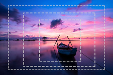
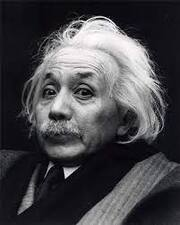
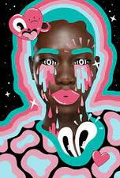
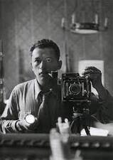

Planos y Ángulos
Los planos, en el lenguaje audiovisual, son la perspectiva visual de los elementos que hay en la totalidad de un encuadre, siendo captados por un observador; en los planos se pueden destacar el plano americano, el primer plano, el plano medio, entre otros. Los ángulos, mientras tanto, son las maneras en las que se puede posicionar la cámara para capturar la imagen, cada uno de ellos generando un punto de vista completamente diferente.
Ley de los tercios
La ley de los tercios se basa en la composición. Es decir, es la manera en la cual se acomodan los elementos presentes para que la visión del espectador vaya dirigida a ciertos "puntos" de interés, y la fotografía logre un impacto más fuerte.
Enfoque e iluminación
La luz es el elemento fundamental para la fotografía. Adicional a eso, es un factor que puede influir demasiado en la composición, puesto que con ella se pueden resaltar u ocultar ciertos puntos, agregar un valor de peso a la historia que quiere contarse, y en general se puede jugar con ella para lograr muchos efectos visuales
Encuadre fotográfico


El encuadre fotográfico es muy importante, ya que puede verse como el "escenario" de la fotografía. No hay que confundirlo con el plano; el encuadre es el que delimita de cierta manera el contenido que va a aparecer en la imagen, y a partir de eso, realizar los pasos anteriores para lograr un concepto mucho más interesante.
Apropiación

No, la apropiación no es explícitamente plagio, pero es algo similar. Consiste en tomar una obra, imagen, ilustración, concepto, etc, de otra persona y recrearlo, en su mayoría con las mismas técnicas de base, pero aplicando cambios muy mínimos. Básicamente, puede ser una obra existente, hecha nuevamente por otro artista.
Intervención fotográfica

Las intervenciones fotográficas se basan en tener ideas de varias partes, y unir las que parezcan más interesantes. Es hacer una composición nueva a partir de varios conceptos, parecida a un collage. Esta puede ser digital o análoga
Ensayo fotográfico

En el ensayo fotográfico se tratan de tomar fotografías que lleven el hilo de una historia. Es decir que normalmente los ensayos son a manera narrativa, y junto con las imagenes pueden incluirse descripciones para explicar los sucesos, emociones y/o pensamientos que se están viendo.